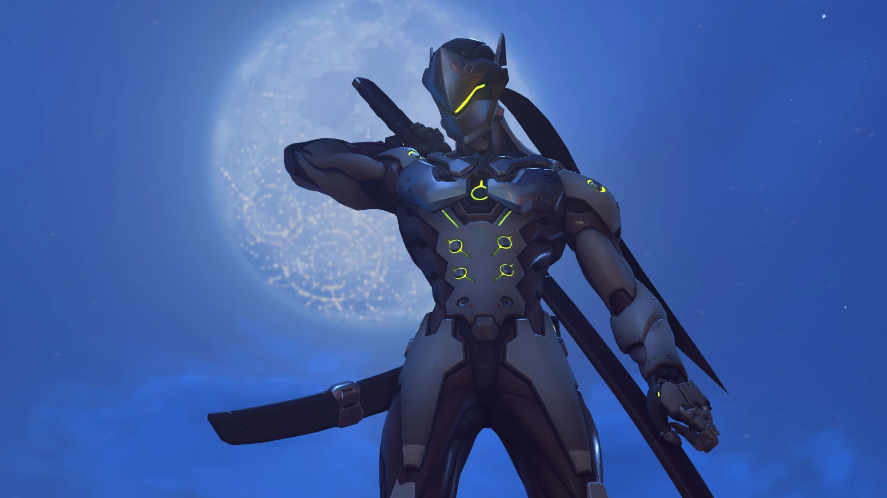

Heroes de Daño
Los héroes de daño buscan, se enfrentan y destruyen al enemigo con diferentes tipos de herramientas, habilidades y estilos de juego. Son temibles, pero frágiles, por lo que necesitan refuerzos para sobrevivir.
Ashe
Ashe nació en el seno de una familia acaudalada, con unos padres más preocupados por su fortuna que por su hija. Su ambición y arrojo la hicieron rebelarse y formar la banda Deadlock, que no tardó en ganar reputación en los bajos fondos criminales. Tras conseguir que las bandas del sudeste cooperaran, Ashe se ganó un estatus de leyenda, ya que recuperó la notoriedad del que en su día fue el salvaje Oeste.
Cassidy
Cassidy fue uno de los fundadores de la infame banda Deadlock, pero lo obligaron a unirse a Blackwatch, la división de operaciones encubiertas de Overwatch. Creía que podría enmendar su pasado luchando contra las injusticias del mundo; pero, cuando Overwatch desapareció, tocó fondo. Con el tiempo, eso sí, resurgió como mercenario para luchar solo por las causas que consideraba justas.
Echo
La avanzada robot de inteligencia artificial Echo, desarrollada por la doctora de Overwatch Mina Liao, tiene una personalidad semejante a la de su creadora. Lamentablemente, tras el asesinato de Liao, el proyecto se canceló y Echo acabó en cuarentena militar. Años más tarde, Cole Cassidy la liberó y se unió al nuevo Overwatch y a su lucha por salvar el mundo.

Genji
El ninja Genji Shimada estuvo al borde de la muerte tras un enfrentamiento con su hermano, pero Overwatch lo rescató. Para ello, la organización tuvo que convertirlo en un arma biológica con mejoras cibernéticas. Tras la caída de Overwatch, Genji no fue capaz de lidiar con su naturaleza y su propósito, de modo que buscó la paz estudiando al monje ómnico Zenyatta... hasta que recibió la llamada de Winston.
Hanzo
Cuando el padre de Hanzo falleció, este tuvo que encargarse de guiar al clan ninja Shimada. Los miembros más ancianos lo instaron a meter en vereda a su hermano Genji, lo que provocó un enfrentamiento que acabó con la vida de Genji. Horrorizado, Hanzo abandonó el clan y se dedicó a recorrer el mundo solo a modo de castigo. Sin embargo, Hanzo ha descubierto que Genji sigue vivo, así que le toca decidir cuál será su siguiente paso.
Mei
Mei-Ling Zhou, climatóloga excelsa destinada en Ecobase: Antártida, acabó criopreservada junto con su equipo debido a una terrible tormenta. Por desgracia, el proceso se prolongó más de lo esperado y Mei despertó 9 años más tarde, siendo ella la única superviviente de la dañada estación. Con la ayuda de Nevado, su robot acompañante, Mei inventó una tecnología novedosa que le permitió escapar de la Antártida y unirse al nuevo Overwatch